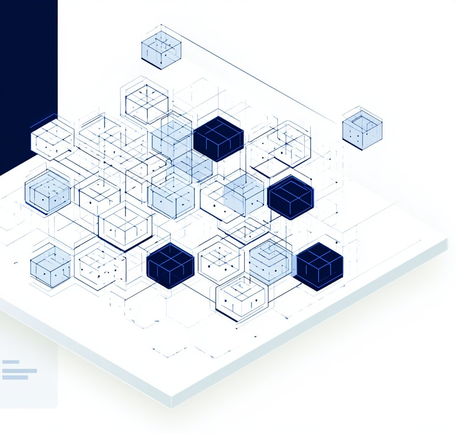

¶
Risk-scoring methodology
for counterfeit-resilient
component procurement
CILM provides a structured, auditable methodology for component verification, documentation integrity, and supply-chain risk intelligence — informed by OECD counterfeit-trade context and aligned with SAE AS6171 verification logic.
Risk Intelligence
CIRS converts observable supplier, channel, market, verification, and geographic indicators into a normalized risk score.
Documentation Integrity
CILM connects procurement documentation, verification evidence, and lifecycle records into an auditable integrity layer.
Channel Provenance
Authorized-channel procurement establishes the risk floor; unknown-source procurement defines the structural risk ceiling.
U.S. Application
Decision rules support risk-based procurement documentation in U.S. high-reliability supply-chain environments.

A structured methodology for component verification, documentation integrity, and lifecycle risk management.
Learn more →CIRS scoring model — 5-parameter composite normalized [0, 1] across supplier, channel, and geographic indicators.
Learn more →Methodological white paper published on Zenodo. DOI: 10.5281/zenodo.19657865
Read papers →CILM-IRI dataset (N=67) published on IEEE DataPort. DOI: 10.21227/34y3-zj88
Explore datasets →Public research artifacts
| Artifact | Repository | DOI / Link |
|---|---|---|
| CILM Methodological White Paper | Zenodo | 10.5281/zenodo.19657865 ↗ |
| CILM-IRI Dataset (N=67) | IEEE DataPort | 10.21227/34y3-zj88 ↗ |
| Methodological Article / Preprint | This site | Data & Publications ↗ |
CILM is an independent methodology — not affiliated with or endorsed by SAE, IEEE, NIST, or any U.S. government agency.